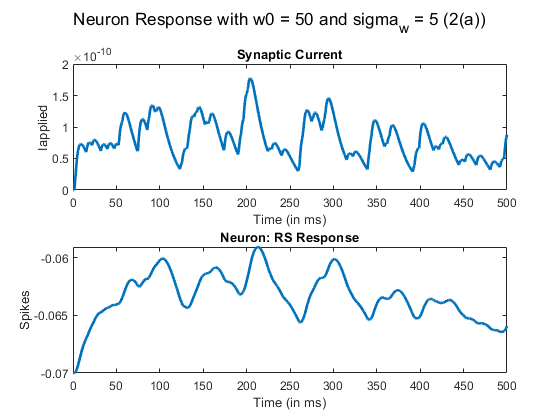

Contents
Problem 1
PART (a)
T = 0.5; dt = 0.1e-3; k = 10; lambda = k*dt; time = (dt:dt:T); poisson_output = makedist('Poisson','lambda',lambda); t_size = length(time); stimulus = zeros(1,t_size); fprintf('Time Instants: '); for i = 1:t_size spike = random(poisson_output,1); if (spike >= 1) stimulus(1,i) = 1; %spike-train fprintf('%f, ', i*dt); %timestamp end end figure(1); sgtitle(sprintf('Problem 1')); subplot(3,1,1); plot(time.*1000,stimulus(1,:), 'Linewidth',2); title('Poisson Stimulus'); xlabel('Spikes'); ylabel('Time (in ms) '); % PART (b) - Total Current Calculation I0 = 1e-12; we = 500; tau = 15e-3; tau_s = tau/4; Iapplied = zeros(1,t_size); for i = 1:t_size for t = 1:i if (stimulus(1,t) == 1) Iapplied(1,i) = Iapplied(1,i) + I0*we*(exp(-(i - t)*dt/tau) - exp(-(i - t)*dt/tau_s)); end end end subplot(3,1,2); plot(time.*1000,Iapplied(1,:), 'Linewidth',2); title('Synaptic Current'); ylabel('Iapplied'); xlabel('Time (in ms)'); %Membrane Potential (AEF RS) :HW 1 Q3 V_t = euler_method(1,Iapplied,dt); %Same function as used in HW1 subplot(3,1,3); plot(time.*1000, V_t, 'linewidth', 2); title(sprintf('Neuron: RS Response')); xlabel('Time (in ms)'); ylabel('Spikes');
Time Instants: 0.030500, 0.059700, 0.083800, 0.131800, 0.296700,
Problem 2a
Ns = 100; w0 = 50; sigma_w = 5; T = 0.5; dt = 1e-4; l_t = 1; lambda = l_t*dt; syn_strength = w0 + sigma_w*randn(Ns,1); %Strength gaussian -- randn -- standard normal time = (dt:dt:T); poisson_output = makedist('Poisson', 'lambda', lambda); t_size = length(time); m_syn_stimulus = zeros(Ns, t_size); for i = 1:Ns % Each Synapse for j = 1:t_size % Each time spike = random(poisson_output,1); if (spike >= 1) m_syn_stimulus(i,j) = 1; %spike-train end end end I0 = 1e-12; tau = 15e-3; tau_s = tau/4; Iapplied = zeros(Ns,t_size); for k = 1: Ns for i = 1:t_size for t = 1:i if (m_syn_stimulus(k,t) == 1) Iapplied(k,i) = Iapplied(k,i) + I0*syn_strength(k,1)*(exp(-(i - t)*dt/tau) - exp(-(i - t)*dt/tau_s)); end end end end I_total = sum(Iapplied, 1); % Sum of all synapses 1 x 5000 figure(2); sgtitle(sprintf('Neuron Response with w0 = 50 and sigma_w = 5 (2(a))')); subplot(2,1,1); plot(time.*1000,I_total(1,:), 'Linewidth',2); title('Synaptic Current'); ylabel('Iapplied'); xlabel('Time (in ms)'); %Membrane Potential (AEF RS) :HW 1 Q3 V_t = euler_method(1,I_total,dt); %Same function as used in HW1 subplot(2,1,2); plot(time.*1000, V_t, 'linewidth', 2); title(sprintf('Neuron: RS Response')); xlabel('Time (in ms)'); ylabel('Spikes'); %RESULT: NO SPIKES ISSUED, DUE TO LESS WEIGHTS %PART (b) -- SAME STIMULUS w0 = 250; sigma_w = 25; syn_strength = w0 + sigma_w*randn(Ns,1); %Strength gaussian -- randn -- standard normal Iapplied = zeros(Ns,t_size); for k = 1: Ns for i = 1:t_size for t = 1:i if (m_syn_stimulus(k,t) == 1) Iapplied(k,i) = Iapplied(k,i) + I0*syn_strength(k,1)*(exp(-(i - t)*dt/tau) - exp(-(i - t)*dt/tau_s)); end end end end I_total = sum(Iapplied, 1); % Sum of all synapses 1 x 5000 figure(3); sgtitle(sprintf('Neuron Response with w0 = 250 and sigma_w = 25 (2(b))')); subplot(2,1,1); plot(time.*1000,I_total(1,:), 'Linewidth',2); title('Synaptic Current'); ylabel('Iapplied'); xlabel('Time (in ms)'); %Membrane Potential (AEF RS) :HW 1 Q3 V_t = euler_method(1,I_total,dt); %Same function as used in HW1 subplot(2,1,2); plot(time.*1000, V_t, 'linewidth', 2); title(sprintf('Neuron: RS Response')); xlabel('Time (in ms)'); ylabel('Spikes'); %RESULT: MANY SPIKES OBSERVED (68) DUE TO INCREASE IN MEAN SYNAPSE WEIGHT % Problem 3 -- SAME STIMULUS gamma = 1; w0 = 50; sigma_w = 5; syn_strength = w0 + sigma_w*randn(Ns,1); %Strength gaussian -- randn -- standard normal num_iter = 0; V_t = ones(1, t_size)*-0.09; % to satisfy while condition while(max(V_t) < -0.04) Iapplied = zeros(Ns,t_size); for k = 1: Ns for i = 1:t_size for t = 1:i if (m_syn_stimulus(k,t) == 1) Iapplied(k,i) = Iapplied(k,i) + I0*syn_strength(k,1)*(exp(-(i - t)*dt/tau) - exp(-(i - t)*dt/tau_s)); end end end end I_total = sum(Iapplied, 1); % Sum of all synapses 1 x 5000 %Membrane Potential (AEF RS) :HW 1 Q3 V_t = euler_method(1,I_total,dt); %Same function as used in HW1 [Max_value,Index] = max(V_t); t_max = Index*dt; %Update of Weights for j = 1:Ns n = (Index - 1); flag = 0; while(n>0) if (m_syn_stimulus(j,n) == 1) flag = 1; flag_stimulus = n; break; end n = n-1; end if(flag == 1) del_t_k = (t_max - flag_stimulus*dt); syn_strength(j,1) = syn_strength(j,1)*(1 + exp(-del_t_k/tau) - exp(-del_t_k/tau_s)); end end num_iter = num_iter + 1; end fprintf('Number of Iterations: %d\n', num_iter); fprintf('Weights: \n'); disp(syn_strength); figure(4); plot(time.*1000, V_t, 'linewidth', 2); title(sprintf('Neuron: RS Response - First Single Spike (3(a))')); xlabel('Time (in ms)'); ylabel('Spikes');
Number of Iterations: 5 Weights: 50.5244 57.0077 55.8876 45.5106 49.0664 57.2939 48.8137 43.4990 47.4148 60.6483 49.5374 49.5464 47.2216 47.4357 42.2730 44.5058 50.2826 39.7105 55.5961 51.9849 49.1749 129.5885 183.0026 62.3826 45.6710 47.2058 234.4988 35.6148 158.5708 59.1098 47.0874 39.0880 57.7941 177.6290 48.7144 51.5021 42.8102 56.6017 45.4242 49.9488 43.9970 51.1354 51.6210 50.8521 52.9808 57.4230 46.0037 44.5671 54.5158 51.3653 44.8093 53.8306 52.3494 53.7189 42.2269 42.9921 40.2359 40.0077 58.7865 46.4370 48.4131 43.3341 45.7214 52.4624 48.6531 63.9908 187.3528 52.9788 47.0305 51.1733 55.0422 47.3583 47.4477 48.9391 46.0592 52.1378 48.9818 58.4018 51.5868 45.0105 44.3625 42.7471 47.5968 45.4625 52.5711 46.3577 56.5912 36.5071 49.1954 35.7589 51.6343 49.7648 51.9346 45.2834 52.8851 48.3109 50.4615 69.9949 54.0367 49.9836